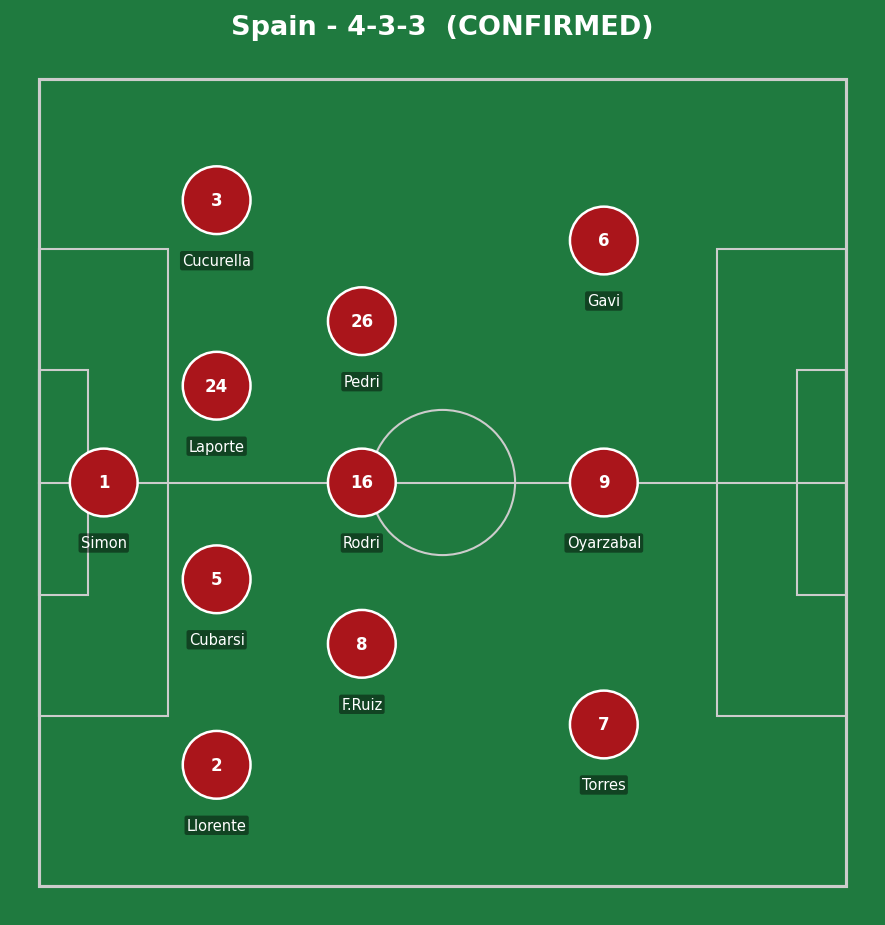
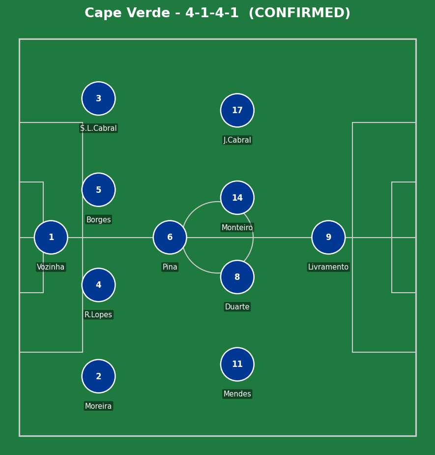
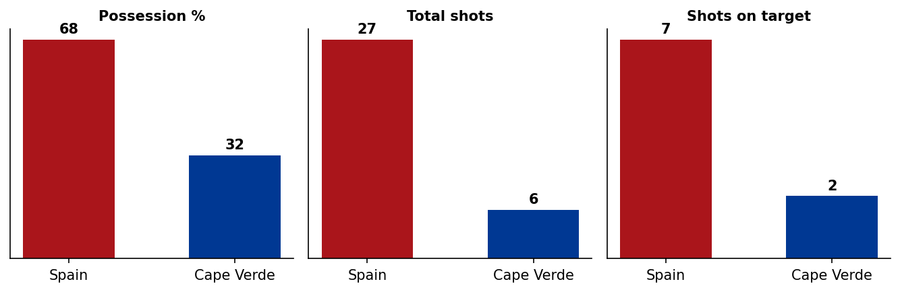
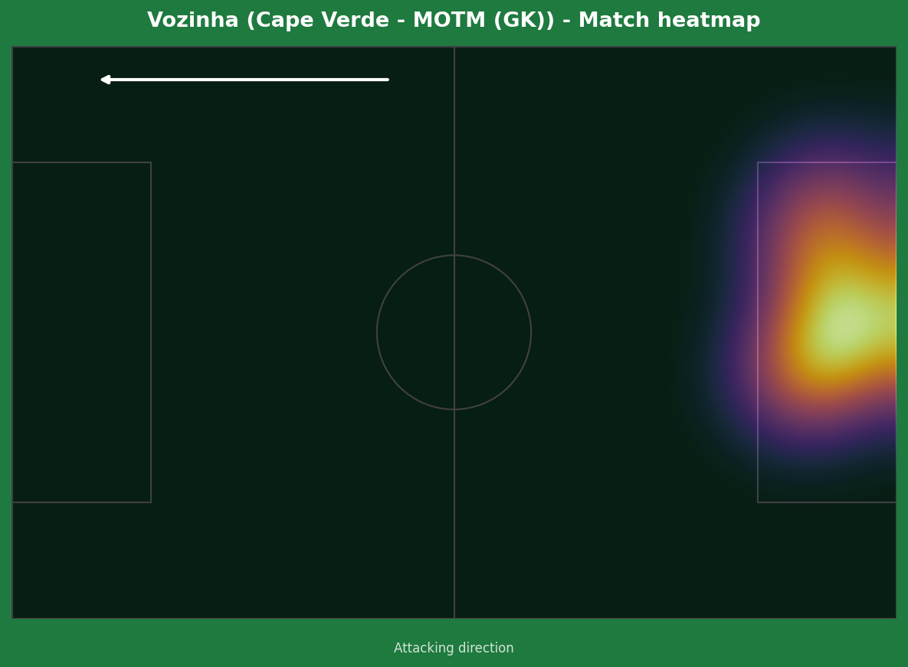
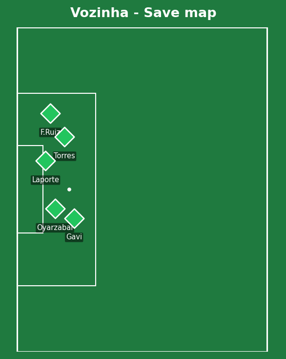
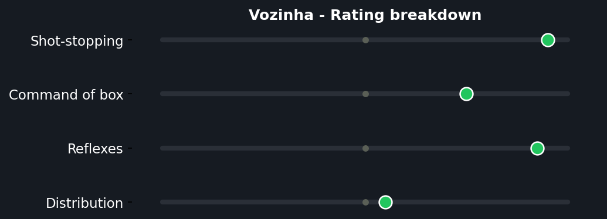

Spain dominated every measurable statistic and still couldn't find a way past Cape Verde - World Cup debutants making their first-ever appearance at the finals. Ferran Torres hit the crossbar from close range, Oyarzabal had a second-half effort blocked, and Vozinha produced a string of genuinely brilliant stops in between, capped by a Diney header late on that nearly snatched an even bigger shock for Cape Verde. A point against the 2010 World Cup winners will go down as the greatest result in their nation's footballing history.


Spain (4-3-3): Simon; Llorente, Cubarsi, Laporte, Cucurella; F. Ruiz, Rodri, Pedri; Torres, Oyarzabal, Gavi. Cape Verde (4-1-4-1): Vozinha; Moreira, R. Lopes, Borges, S.L. Cabral; Pina; Mendes, Duarte, Monteiro, J. Cabral; Livramento.
Spain's possession-heavy approach (68%) created a genuinely high volume of chances, but the profile of those chances tells a story - many were worked from similar central and left-sided positions, and Cape Verde's deep, disciplined banked shape (a single defensive midfielder in Pina screening a back four, with the wide midfielders tucking in narrow) meant Spain rarely got the clean, unguarded sight of goal that 27 shots might suggest. Quantity over quality is a fair, if slightly unusual, criticism of an elite side here.
Cape Verde's gameplan was honest and disciplined - stay compact, deny space between the lines, and rely on Vozinha's individual quality as the actual difference-maker rather than expecting to create much themselves (just 6 shots, 2 on target, across 90 minutes). It worked perfectly, and Diney's late header nearly turned a famous point into an even more famous win.
The key moment of the match wasn't tactical at all - it was Vozinha's individual brilliance, full stop. Take him out of this Cape Verde side and this is comfortably a 3 or 4-goal Spain win on the underlying numbers; he is the entire reason this result happened.

A 27-6 shot count and 68-32 possession split with an identical scoreline of 0-0 is about as stark a gap between dominance and result as exists in football - exactly why this ranks among the tournament's biggest shocks.



A perfect save record against a side that managed 7 shots on target is, on its own, a career-defining World Cup performance - and at 40 years old, on the biggest stage that exists, the timing makes it more remarkable, not less. The save map shows the spread of genuine quality he had to deal with: efforts from Oyarzabal, Laporte, Torres, Gavi, and Fabian Ruiz all turned away, not just routine claims. The rating breakdown reflects exactly what you'd expect from this kind of display - elite shot-stopping and reflexes, with distribution a clear weaker area, which is a fair trade-off for a goalkeeper whose entire job today was damage limitation, executed about as well as it's possible to execute it.
Illustrative reconstruction based on known event locations, not raw GPS tracking data.
Torres - 6.5 (hit the bar, unlucky)
Oyarzabal - 6.0 (quiet by his standards)
Pedri - 6.5 (tidy, no real final ball)
Cucurella - 6.0 (steady, no real threat against)
Vozinha - 9.5 ⭐ MOTM (perfect save record)
Pina - 7.0 (screened the back four well)
Borges - 6.5 (organized, disciplined)
Diney - 6.5 (nearly the historic winner)
Next: Spain face Saudi Arabia. Cape Verde face Uruguay, looking to build on the platform of World Cup history they've already made.